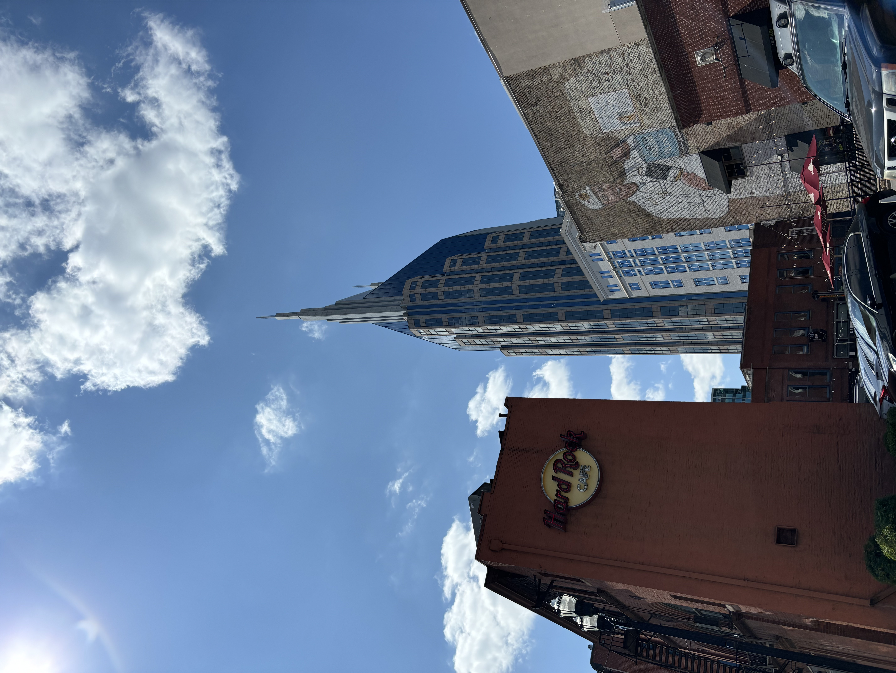
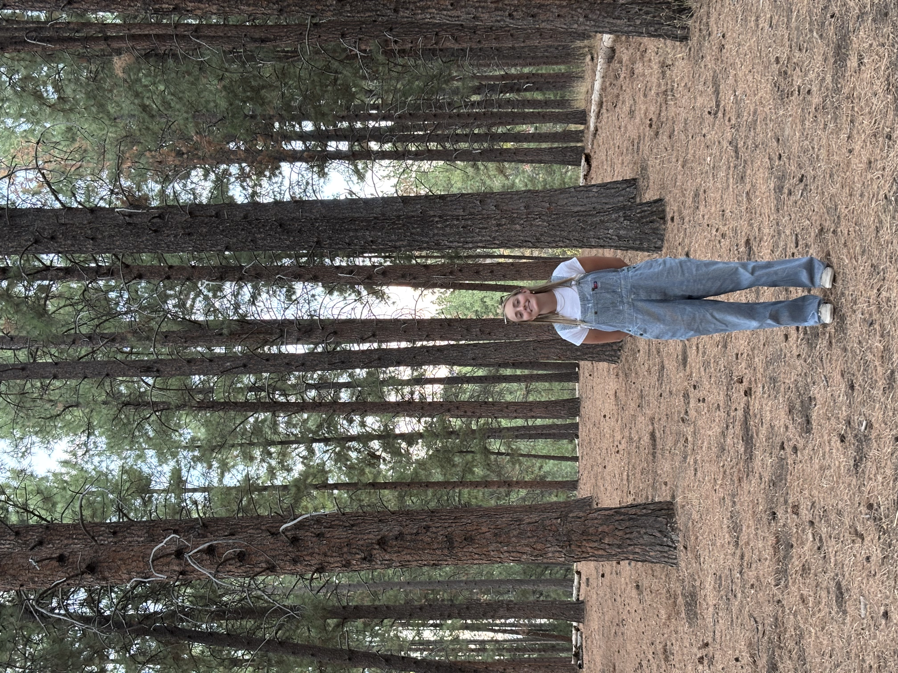
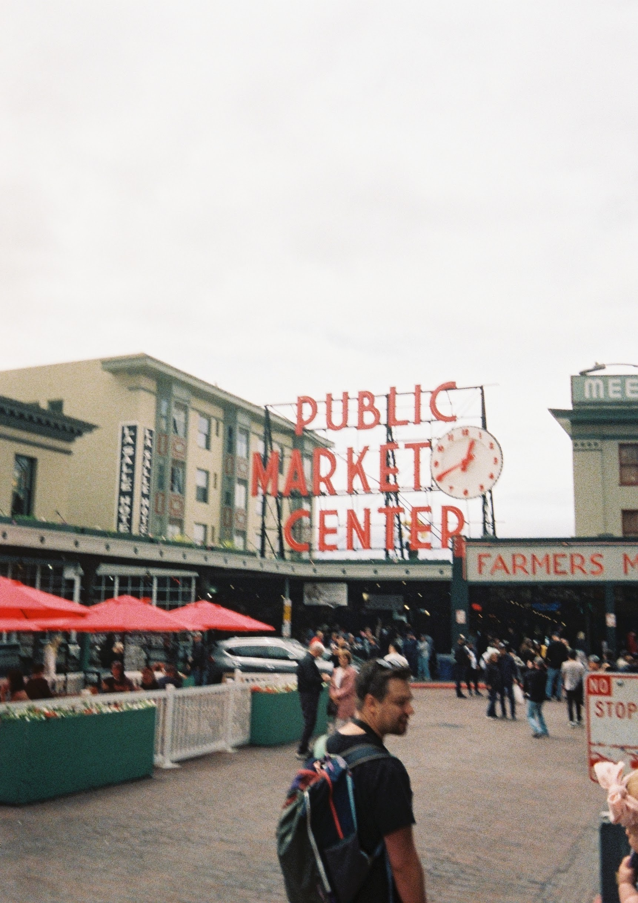
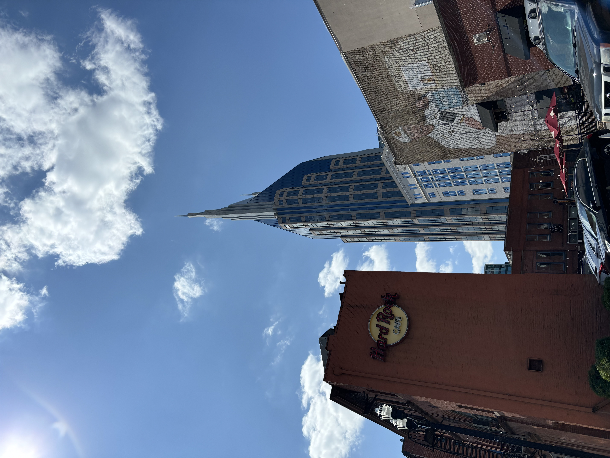
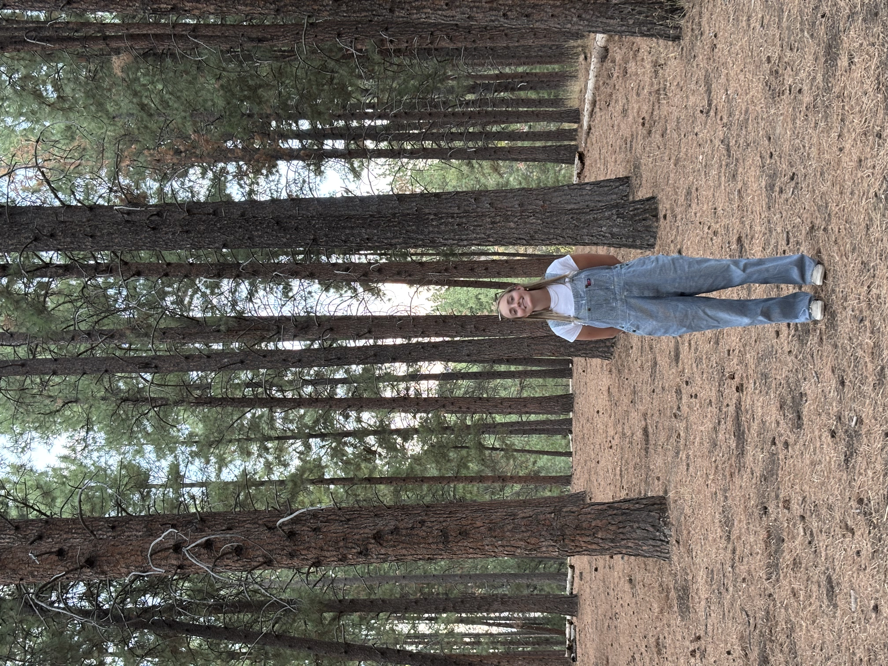
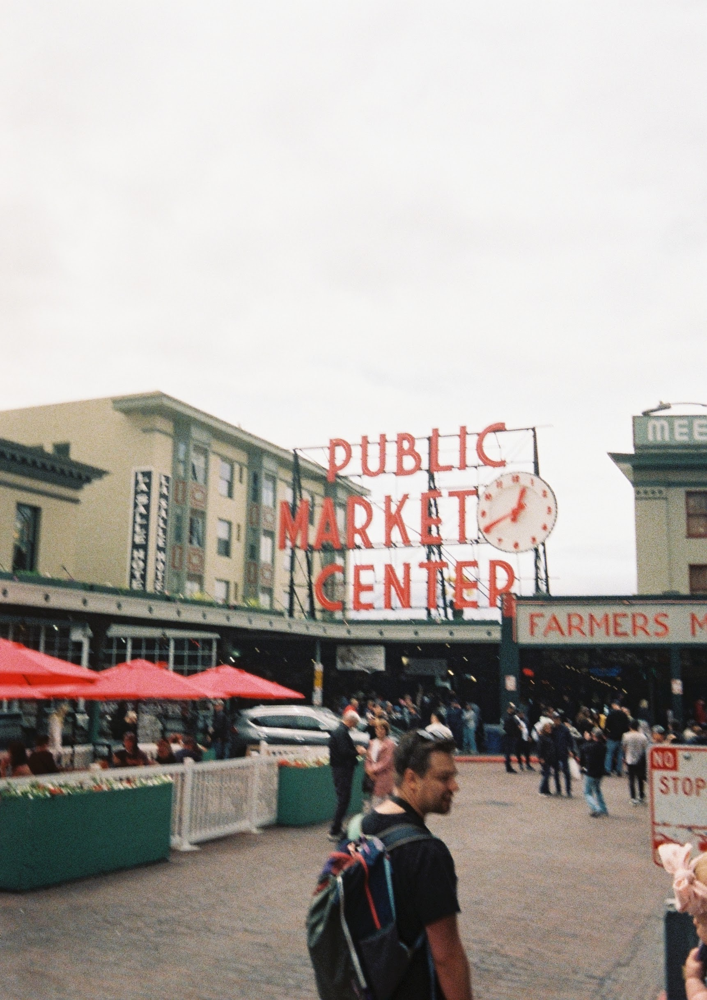
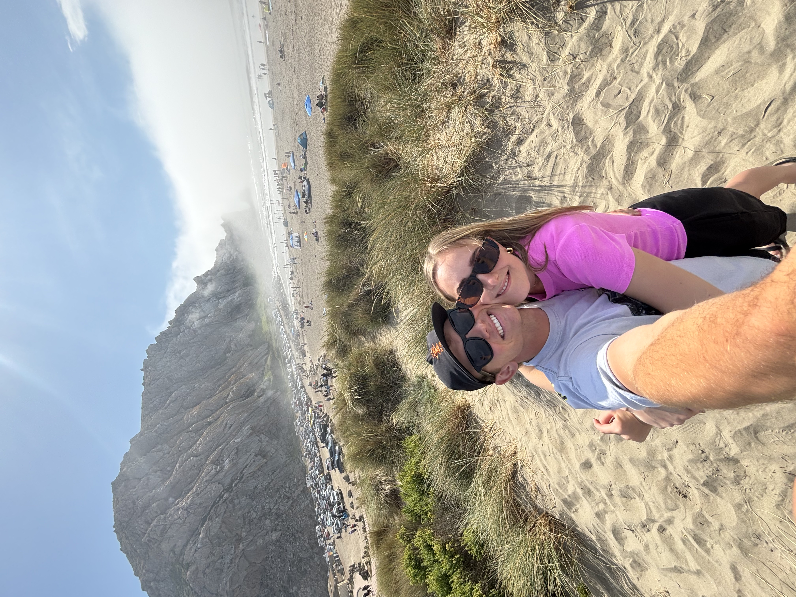
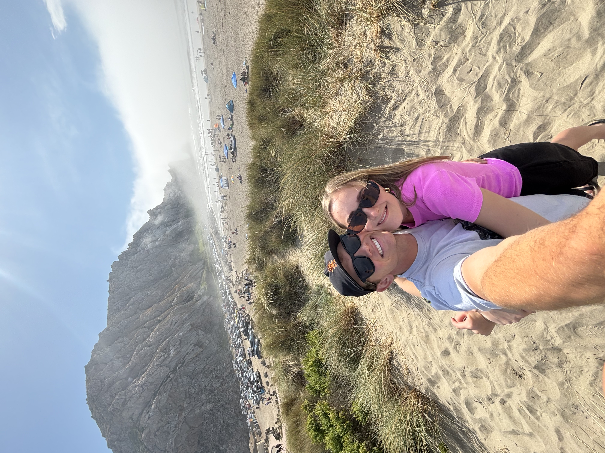
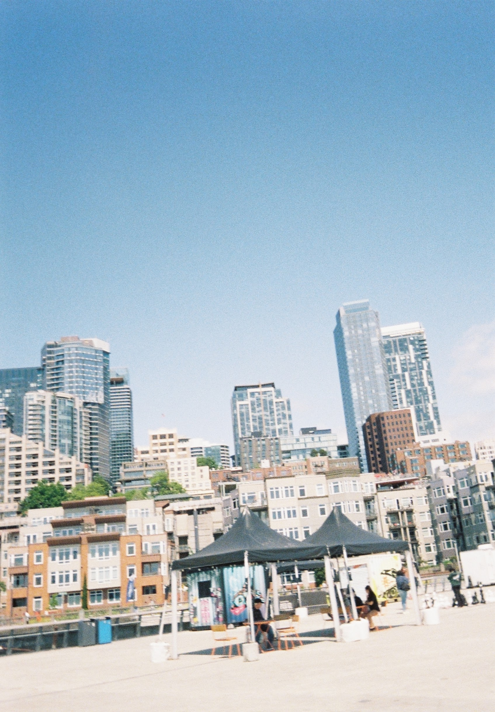
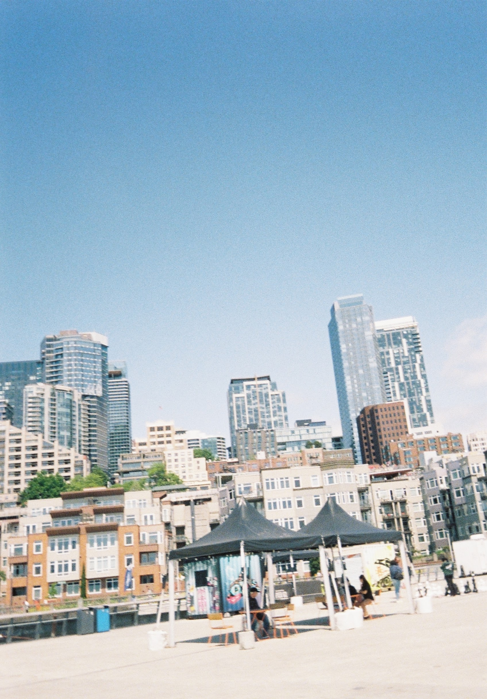

 


 

This photo grid highlights some of my favorite moments spent traveling, exploring the outdoors, and camping with my wife, friends, and family. Being outside—whether hiking, camping, or discovering new places—brings me a deep sense of joy and balance. These experiences create lasting memories and remind me to slow down, appreciate nature, and enjoy time with the people I care about most.